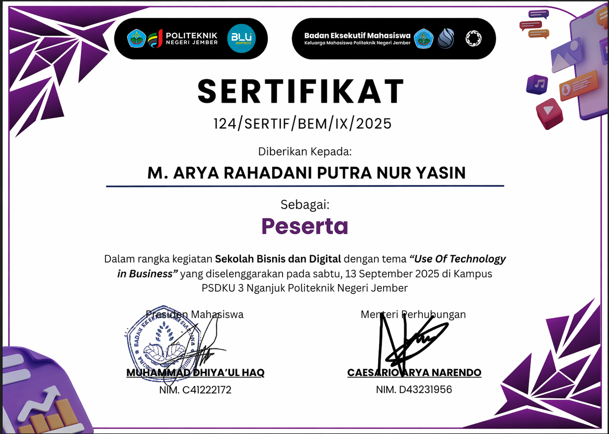
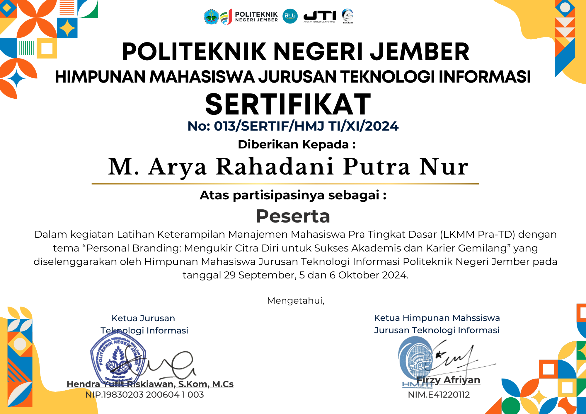
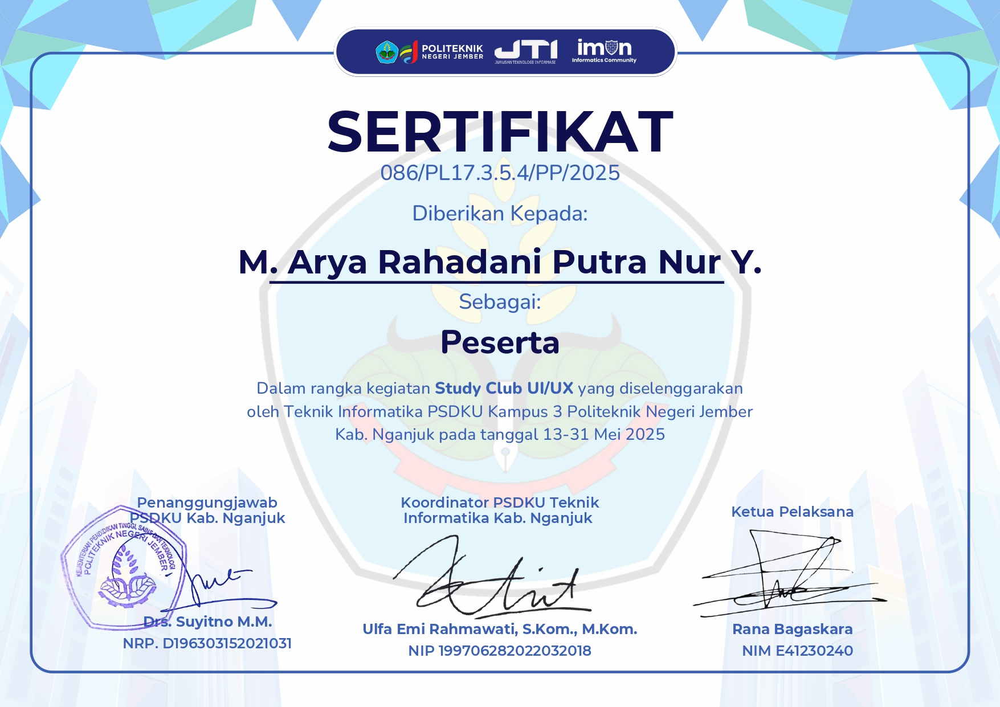
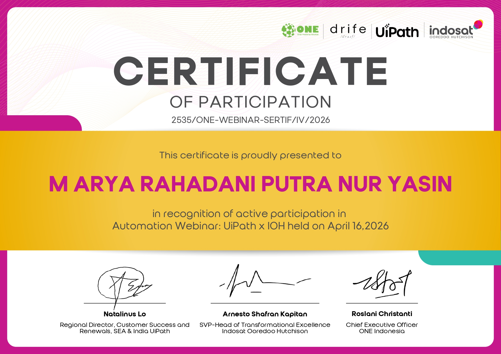
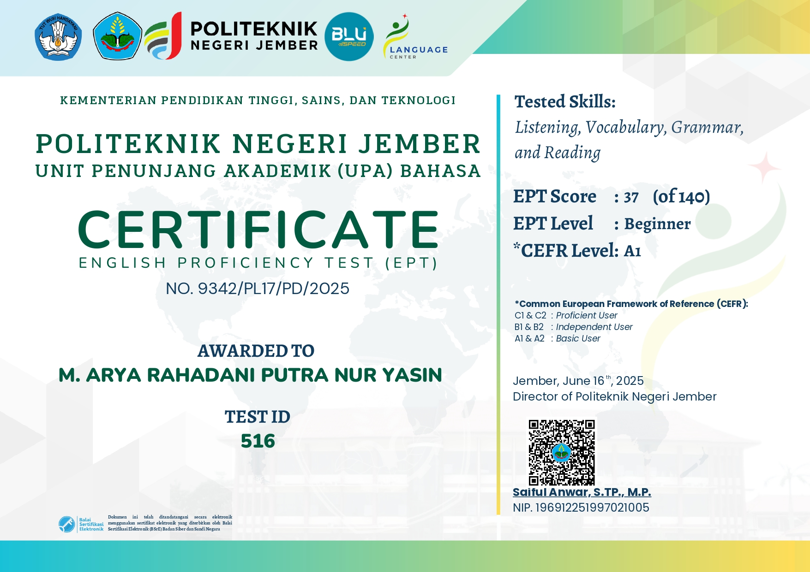

UI/UX Design
Merancang antarmuka yang praktis dan mudah digunakan
BOOTING CORE...
M Arya Rahadani Putra Nur Yasin
Mahasiswa semester 4 Program Studi Teknik Informatika di Politeknik Negeri Jember dengan fokus pada UI/UX Design dan pengembangan aplikasi. Berpengalaman dalam merancang antarmuka pengguna yang intuitif, melakukan analisis kebutuhan sistem, serta melaksanakan pengujian kualitas perangkat lunak.
Merancang antarmuka yang praktis dan mudah digunakan

Membangun antarmuka web yang responsif dan interaktif

Menganalisis kebutuhan sistem dan alur kerja

Beberapa proyek unggulan saya

Desktop app untuk pengelolaan stok, penjualan, pembelian, gaji, dan laporan keuangan

Solusi praktis pencatatan stok, transaksi, supplier, dan laporan keuangan untuk toko kelontong

Layanan Digital Desa untuk Semua Warga, pengajuan surat online, serta update aktivitas desa
Tools dan teknologi yang saya gunakan
Dokumentasi pelatihan, webinar, dan sertifikat yang telah saya ikuti

Sertifikat peserta dengan tema Use of Technology in Business, BEM Politeknik Negeri Jember, 2025

Sertifikat peserta dengan tema Personal Branding, HMJ TI Politeknik Negeri Jember, 2024

Sertifikat peserta kegiatan Study Club UI/UX, Teknik Informatika PSDKU Kampus 3 Nganjuk, 2025
Pelatihan desain antarmuka ramah pengguna, Politeknik Negeri Jember (2025).

Sertifikat peserta webinar Automation UiPath x Indosat Ooredoo Hutchison, April 2026

Sertifikat hasil EPT dengan level Beginner (CEFR A1), Politeknik Negeri Jember, Juni 2025
Silakan hubungi saya melalui platform berikut
Merancang pengalaman digital yang bermakna
Saya percaya bahwa desain bukan hanya soal estetika, melainkan solusi nyata yang mempermudah kehidupan pengguna. Setiap antarmuka yang saya rancang berangkat dari pemahaman mendalam terhadap kebutuhan sistem dan pengalaman pengguna, sehingga menghasilkan aplikasi yang intuitif sekaligus fungsional. Dengan semangat untuk terus belajar dan berkembang, saya selalu mencari kesempatan baru yang dapat memperluas wawasan, mengasah keterampilan, dan memberikan kontribusi positif melalui solusi digital yang berdampak bagi masyarakat maupun dunia profesional.